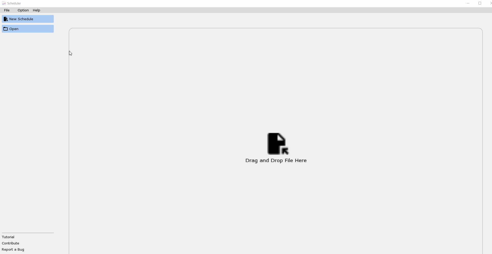
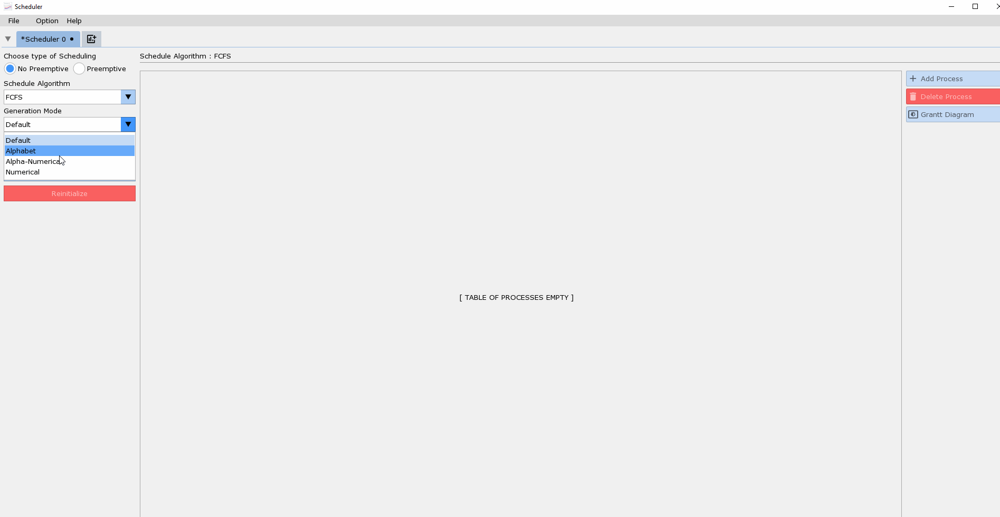
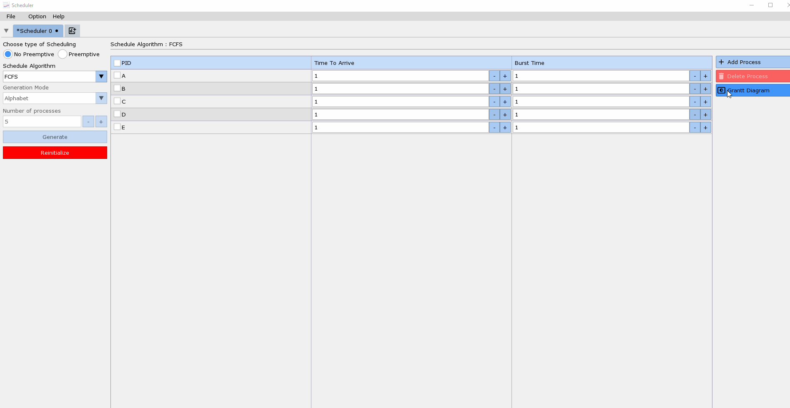
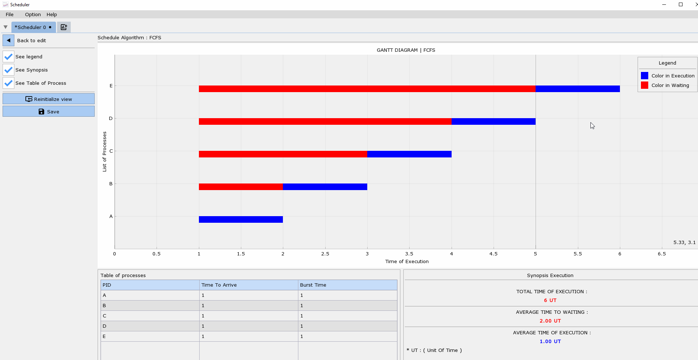
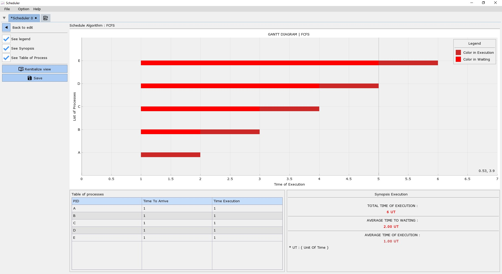
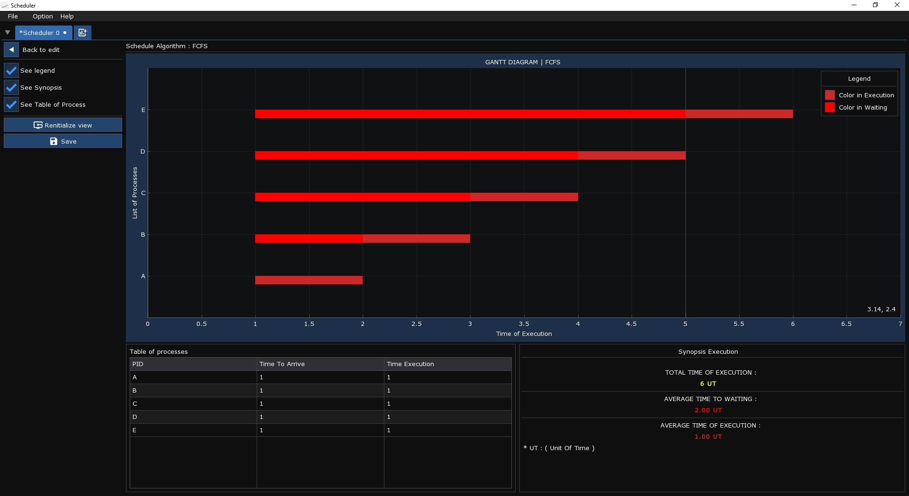

Logiciel de visualisation du diagramme de GRANT pour l'algorithme d'ordonnancement dans un systeme UNIX,Pour l'etude seulement!
Tres facile a utiliser
Vue d'ensemble
Scheduler est un logiciel qui te permet de voir de facon visuel le graphe (DIAGRAMME DE GRANT) Pour l'ordonnancement dans le systeme UNIX
Plusieur fonctionnalite implementer:
- Choisir le Mode Generation ( Alphabetique, Numerique, Alpha-Numerique,...)
- Majeur algorithm Comme ( Round Robin, Shortest Remaning Time First,...)
- Deux langues sont disponible maintemant ( Francais et Anglais )
Manuel
Commencer l'ordonnancement
Pour commencer a ordonnancer il faut faire :

Generer une table de processus
Pour generer la table de processus

Generer le Diagramme de GANTT

Changer la couleur de processus

Customisation
Vous avez la possibilite de changer le theme de l'application ( Clair or Sombre)
| Clair | Sombre |
|---|---|
|  |  |